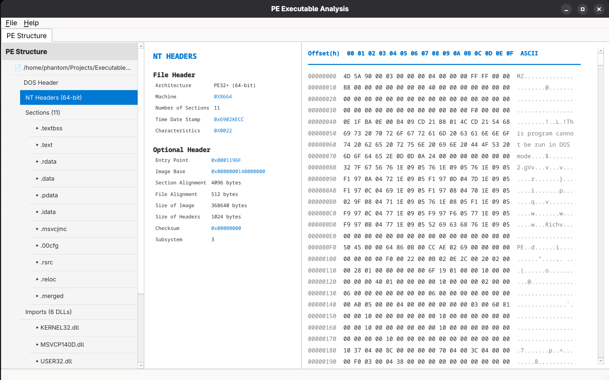

Developed an application that reads Binary information and extract header information for 64-bit and 32-bit .exe's
 View Code on GitHubCreated malicious code that contains a logic bomb which opens calc.exe for testing purposes, and outputs keystrokes to console (not sent anywhere for testing purposes)
Designed algorithms for a Raspberry Pi humanoid robot, including localization using UWB sensors and a programmable GUI.
View Code on GitHubDeveloped a ticketing system using Django and PostgreSQL with Agile methodology.
View Code on GitHubCreated a recursive descent parser, compiler, and bytecode interpreter in Java.
Used Volatility to analyze memory captures and identify malicious execution.